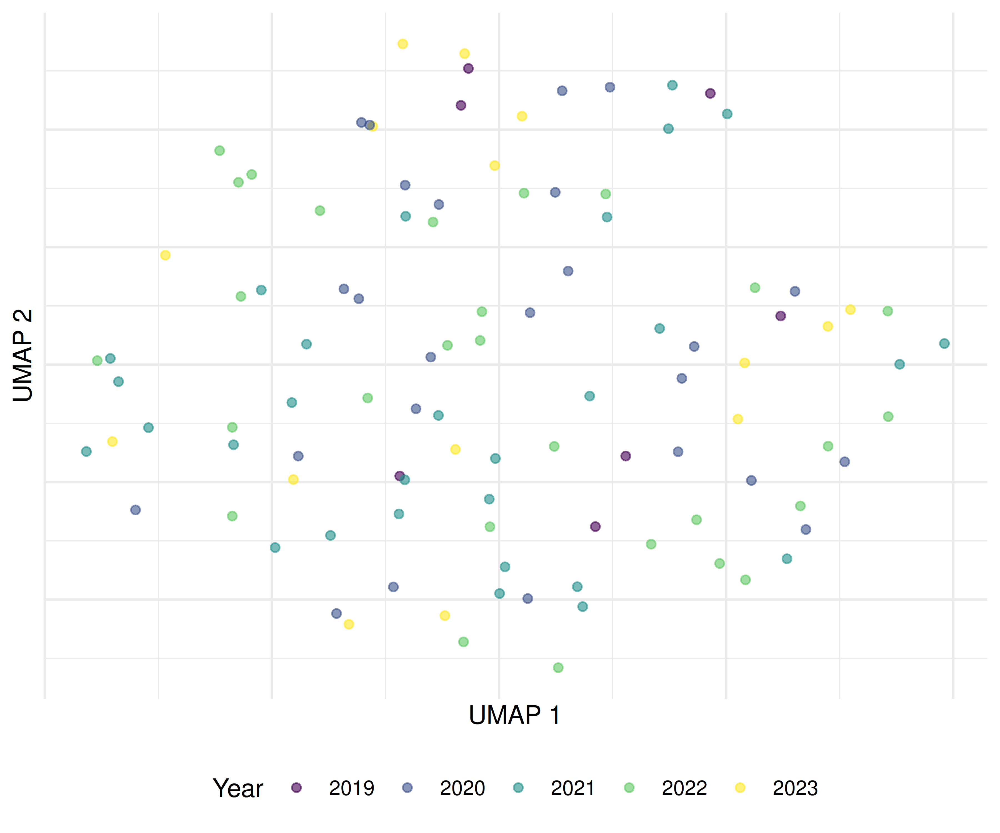
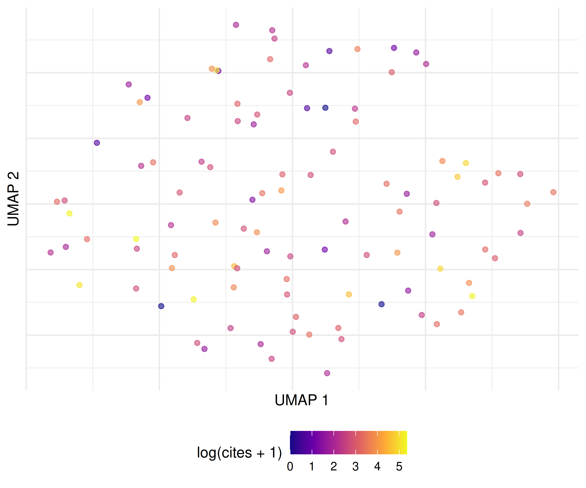

25 Embeddings for Scientometrics
25.1 Learning objectives
After completing this chapter, you will be able to:
- Explain how word and document embeddings differ from bag-of-words representations
- Train simple word embeddings on a bibliometric corpus
- Use pre-trained embeddings to compute document similarity
- Apply UMAP or t-SNE to visualise document clusters in embedding space
- Assess when embeddings add value over simpler text representations
25.3 Conceptual background
Bag-of-words representations (22.3) treat each word as an independent dimension. “Citation analysis” and “bibliometric study” share no features despite being semantically related. Word embeddings address this by mapping words into a dense, low-dimensional vector space where semantically similar words are close together. The word2vec algorithm learns these representations by predicting words from their context (skip-gram) or context from words (CBOW) in a large training corpus.
Document embeddings extend the idea to whole documents. Simple approaches average the word vectors of a document’s words (mean pooling). More sophisticated approaches include Doc2Vec (Paragraph Vector), which learns document-specific vectors alongside word vectors, and transformer-based models like SPECTER, which is pre-trained on scientific paper titles and abstracts using citation-based training signals.
For scientometrics, embeddings enable several applications:
- Semantic similarity: Finding papers with similar meaning, even when they use different terminology.
- Clustering: Grouping papers by content in embedding space, complementing topic models (23.3).
- Visualisation: Projecting embeddings to 2D with UMAP or t-SNE to create interpretable “maps” of a corpus.
- Anomaly detection: Identifying papers that are semantically distant from their assigned field or cluster.
The trade-off is interpretability: while TF-IDF features are directly readable (the word “citation” has a specific weight), embedding dimensions are opaque. Embeddings are powerful for similarity and clustering but resist the kind of term-level interpretation that co-word analysis provides.
25.4 Worked example
25.4.1 Preparing text data
works <- oa_fetch(
entity = "works",
primary_location.source.id = "S148561398",
from_publication_date = "2019-01-01",
to_publication_date = "2023-12-31",
options = list(sample = 400, seed = 42)
)
text_df <- works |>
filter(!is.na(abstract), nchar(abstract) > 100) |>
transmute(
doc_id = id,
title = display_name,
text = paste(display_name, abstract, sep = ". "),
year = year(publication_date),
cited_by_count
)
cat(glue("Documents for embedding: {nrow(text_df)}\n"))#> Documents for embedding: 10425.4.2 Training word2vec embeddings
clean_text <- text_df$text |>
str_to_lower() |>
str_replace_all("[^a-z ]", " ") |>
str_squish()
model <- word2vec(clean_text, dim = 100, iter = 20, min_count = 3,
type = "skip-gram", threads = 1)
cat(glue("Vocabulary size: {nrow(as.matrix(model))}\n"))#> Vocabulary size: 1269
if ("citation" %in% rownames(as.matrix(model))) {
nn <- predict(model, newdata = "citation", type = "nearest", top_n = 10)
cat("Nearest neighbours of 'citation':\n")
print(nn)
}#> Nearest neighbours of 'citation':
#> $citation
#> term1 term2 similarity rank
#> 1 citation measurement 0.736 1
#> 2 citation impact 0.721 2
#> 3 citation normalized 0.708 3
#> 4 citation comparisons 0.697 4
#> 5 citation counts 0.696 5
#> 6 citation correlations 0.689 6
#> 7 citation indicated 0.680 7
#> 8 citation classifications 0.678 8
#> 9 citation citations 0.669 9
#> 10 citation intent 0.662 1025.4.3 Computing document embeddings via mean pooling
word_matrix <- as.matrix(model)
doc_embed <- function(text, wm) {
words <- str_split(str_to_lower(str_replace_all(text, "[^a-z ]", " ")),
"\\s+")[[1]]
matched <- words[words %in% rownames(wm)]
if (length(matched) == 0) return(rep(NA_real_, ncol(wm)))
colMeans(wm[matched, , drop = FALSE])
}
doc_embeddings <- map(text_df$text, \(t) doc_embed(t, word_matrix))
embed_mat <- do.call(rbind, doc_embeddings)
valid <- complete.cases(embed_mat)
embed_mat <- embed_mat[valid, ]
text_df_valid <- text_df[valid, ]
cat(glue("Valid document embeddings: {nrow(embed_mat)}\n"))#> Valid document embeddings: 10425.4.4 Dimensionality reduction with UMAP
umap_result <- umap(embed_mat, n_neighbors = 15, min_dist = 0.1,
n_components = 2, ret_model = FALSE)
text_df_valid$umap_x <- umap_result[, 1]
text_df_valid$umap_y <- umap_result[, 2]
ggplot(text_df_valid, aes(x = umap_x, y = umap_y, colour = factor(year))) +
geom_point(alpha = 0.6, size = 1.5) +
scale_colour_manual(values = palette_sci(n_distinct(text_df_valid$year))) +
labs(x = "UMAP 1", y = "UMAP 2", colour = "Year") +
theme_sci() +
theme(axis.text = element_blank(), axis.ticks = element_blank())
Figure 25.1: UMAP projection of document embeddings, coloured by publication year.
25.4.5 Document similarity search
cosine_sim <- function(a, b) sum(a * b) / (sqrt(sum(a^2)) * sqrt(sum(b^2)))
query_idx <- 1
sims <- map_dbl(seq_len(nrow(embed_mat)),
\(i) cosine_sim(embed_mat[query_idx, ], embed_mat[i, ]))
top_similar <- order(sims, decreasing = TRUE)[2:6]
cat(glue("Query: {text_df_valid$title[query_idx]}\n\n"))#> Query: The link between countries’ economic and scientific wealth has a complex dependence on technological activity and research policy
cat("Most similar documents:\n")#> Most similar documents:#> [0.922] Sample size in bibliometric analysis[0.921] Draw me Science[0.915] COVID-19 enabled co-authoring networks: a country-case analysis[0.912] Academic social networks metrics: an effective indicator for university performance?[0.91] Do main paths reflect technological trajectories? Applying main path analysis to the semiconductor manufacturing industry25.4.6 Embedding clusters vs. citation impact
ggplot(text_df_valid, aes(x = umap_x, y = umap_y,
colour = log1p(cited_by_count))) +
geom_point(alpha = 0.6, size = 1.5) +
scale_colour_viridis_c(option = "C", name = "log(cites + 1)") +
labs(x = "UMAP 1", y = "UMAP 2") +
theme_sci() +
theme(axis.text = element_blank(), axis.ticks = element_blank())
Figure 25.2: UMAP embedding coloured by citation impact (log scale).
25.5 Diagnostics and interpretation
- Vocabulary coverage: Check what fraction of abstract words appear in the embedding vocabulary. Low coverage (< 80%) indicates the training corpus is too small or preprocessing is too aggressive.
- Nearest neighbours: Inspect the nearest neighbours of key domain terms. If “citation” is closest to “references” and “bibliometric”, the embeddings capture domain structure.
- UMAP stability: UMAP is stochastic. Run with multiple seeds and check whether the global cluster structure is stable. Individual point positions will vary but clusters should persist.
- Embedding dimensionality: 100–300 dimensions is standard. Below 50, embeddings lose semantic resolution; above 300, training becomes slow with diminishing returns.
25.7 Limitations and responsible use
- Embeddings are opaque. Unlike TF-IDF weights, embedding dimensions have no interpretable meaning. You can measure similarity but not explain why two documents are similar without additional analysis.
- Training data bias. Embeddings reflect the biases of their training corpus. If the corpus overrepresents certain topics or perspectives, the embeddings will too.
- Small corpora produce poor embeddings. Word2vec needs tens of thousands of documents for reliable training. For small bibliometric corpora (< 1,000 papers), use pre-trained embeddings instead.
- UMAP/t-SNE distort distances. These methods preserve local structure but distort global distances. Documents that appear close in 2D may not be the most similar in high-dimensional space (Hicks et al. 2015).
25.9 Common pitfalls
- Training on too few documents. Word2vec on 200 abstracts produces unreliable embeddings. Use at least 5,000 documents or switch to pre-trained models.
- Averaging without weighting. Simple mean pooling treats every word equally. TF-IDF-weighted averaging gives more weight to distinctive terms and often produces better document embeddings.
- Over-interpreting UMAP clusters. Visual clusters in UMAP may reflect projection artifacts. Validate clusters with a separate method (e.g., k-means in the full embedding space).
- Comparing embeddings from different models. Embedding spaces are not aligned across different training runs. Cosine similarity is only meaningful within a single embedding space.
25.10 Exercises
Weighted averaging. Compute document embeddings using TF-IDF-weighted word vectors instead of simple means. Does the UMAP visualisation change?
K-means clustering. Apply k-means (k = 5, 8, 12) to the document embeddings. Compare the resulting clusters with LDA topics from 23.4. Do they agree?
Pre-trained embeddings. If available, use SPECTER embeddings (via reticulate and Python) instead of corpus-trained word2vec. How does similarity search quality change?
Analogy test. Test whether the word2vec model captures analogical relationships (e.g., “journal” - “article” + “book” ≈ “publisher”). What does the result tell you about the model?
25.11 Solutions
Solutions are provided in 2.11.
25.13 Session info
#> R version 4.4.1 (2024-06-14)
#> Platform: x86_64-pc-linux-gnu
#> Running under: Ubuntu 24.04.4 LTS
#>
#> Matrix products: default
#> BLAS: /usr/lib/x86_64-linux-gnu/openblas-pthread/libblas.so.3
#> LAPACK: /usr/lib/x86_64-linux-gnu/openblas-pthread/libopenblasp-r0.3.26.so; LAPACK version 3.12.0
#>
#> locale:
#> [1] LC_CTYPE=C.UTF-8 LC_NUMERIC=C LC_TIME=C.UTF-8 LC_COLLATE=C.UTF-8 LC_MONETARY=C.UTF-8
#> [6] LC_MESSAGES=C.UTF-8 LC_PAPER=C.UTF-8 LC_NAME=C LC_ADDRESS=C LC_TELEPHONE=C
#> [11] LC_MEASUREMENT=C.UTF-8 LC_IDENTIFICATION=C
#>
#> time zone: UTC
#> tzcode source: system (glibc)
#>
#> attached base packages:
#> [1] stats graphics grDevices utils datasets methods base
#>
#> other attached packages:
#> [1] uwot_0.2.4 Matrix_1.7-0 word2vec_0.4.1 stm_1.3.8
#> [5] topicmodels_0.2-17 quanteda.textstats_0.97.2 visNetwork_2.1.4 ggraph_2.2.2
#> [9] tidygraph_1.3.1 igraph_2.3.1 quanteda_4.4 pdftools_3.8.0
#> [13] arrow_24.0.0 bibliometrix_5.3.0 RefManageR_1.4.0 bib2df_1.1.2.0
#> [17] rcrossref_1.2.1 gt_1.3.0 tidytext_0.4.3 glue_1.8.1
#> [21] openalexR_3.0.1 lubridate_1.9.5 forcats_1.0.1 stringr_1.6.0
#> [25] dplyr_1.2.1 purrr_1.2.2 readr_2.2.0 tidyr_1.3.2
#> [29] tibble_3.3.1 ggplot2_4.0.3 tidyverse_2.0.0
#>
#> loaded via a namespace (and not attached):
#> [1] bibtex_0.5.2 RColorBrewer_1.1-3 rstudioapi_0.18.0 jsonlite_2.0.0 magrittr_2.0.5
#> [6] modeltools_0.2-24 farver_2.1.2 rmarkdown_2.31 fs_2.1.0 vctrs_0.7.3
#> [11] memoise_2.0.1 askpass_1.2.1 base64enc_0.1-6 htmltools_0.5.9 contentanalysis_1.0.0
#> [16] curl_7.1.0 janeaustenr_1.0.0 cellranger_1.1.0 sass_0.4.10 bslib_0.10.0
#> [21] htmlwidgets_1.6.4 tokenizers_0.3.0 plyr_1.8.9 httr2_1.2.2 plotly_4.12.0
#> [26] cachem_1.1.0 dimensionsR_0.0.3 mime_0.13 lifecycle_1.0.5 pkgconfig_2.0.3
#> [31] R6_2.6.1 fastmap_1.2.0 shiny_1.13.0 digest_0.6.39 patchwork_1.3.2
#> [36] shinycssloaders_1.1.0 rprojroot_2.1.1 RSpectra_0.16-2 SnowballC_0.7.1 labeling_0.4.3
#> [41] urltools_1.7.3.1 timechange_0.4.0 polyclip_1.10-7 httr_1.4.8 compiler_4.4.1
#> [46] here_1.0.2 bit64_4.8.0 withr_3.0.2 S7_0.2.2 backports_1.5.1
#> [51] viridis_0.6.5 ggforce_0.5.0 MASS_7.3-60.2 rappdirs_0.3.4 bibliometrixData_0.3.0
#> [56] tools_4.4.1 otel_0.2.0 stopwords_2.3 zip_2.3.3 httpuv_1.6.17
#> [61] rentrez_1.2.4 promises_1.5.0 grid_4.4.1 stringdist_0.9.17 reshape2_1.4.5
#> [66] generics_0.1.4 gtable_0.3.6 tzdb_0.5.0 rscopus_0.9.0 ca_0.71.1
#> [71] data.table_1.18.4 hms_1.1.4 xml2_1.5.2 utf8_1.2.6 ggrepel_0.9.8
#> [76] pillar_1.11.1 nsyllable_1.0.1 vroom_1.7.1 later_1.4.8 tweenr_2.0.3
#> [81] brand.yml_0.1.0 lattice_0.22-6 FNN_1.1.4.1 bit_4.6.0 tidyselect_1.2.1
#> [86] tm_0.7-18 miniUI_0.1.2 downlit_0.4.5 knitr_1.51 gridExtra_2.3
#> [91] NLP_0.3-2 bookdown_0.46 stats4_4.4.1 crul_1.6.0 xfun_0.57
#> [96] graphlayouts_1.2.3 matrixStats_1.5.0 DT_0.34.0 humaniformat_0.6.0 stringi_1.8.7
#> [101] lazyeval_0.2.3 qpdf_1.4.1 yaml_2.3.12 evaluate_1.0.5 codetools_0.2-20
#> [106] httpcode_0.3.0 cli_3.6.6 xtable_1.8-8 jquerylib_0.1.4 dichromat_2.0-0.1
#> [111] Rcpp_1.1.1-1.1 readxl_1.4.5 triebeard_0.4.1 XML_3.99-0.23 parallel_4.4.1
#> [116] assertthat_0.2.1 pubmedR_1.0.2 slam_0.1-55 viridisLite_0.4.3 scales_1.4.0
#> [121] crayon_1.5.3 openxlsx_4.2.8.1 rlang_1.2.0 fastmatch_1.1-8